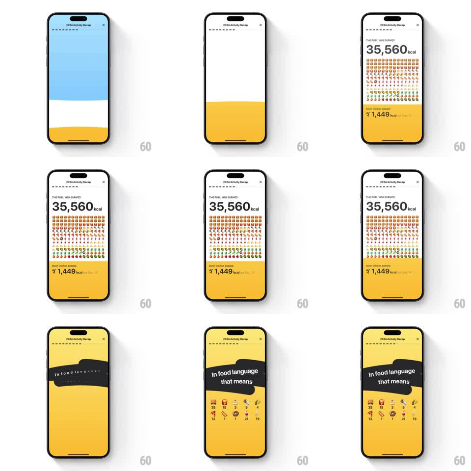

Media
Frame-by-frame

Rebuild this animation 1:1: Gentler Streak's calories recap - a dense emoji field rains in row by row to visualize the total, then a sticker converts the number into food equivalents.

Rebuild this animation 1:1: Gentler Streak's calories recap - a dense emoji field rains in row by row to visualize the total, then a sticker converts the number into food equivalents. ## Integration Integration: stack-agnostic spec - springs given as stiffness/damping, timed motions as duration + curve; map every value to your framework and animation library of choice. ## Scene White over yellow banded screen: "THE FUEL YOU BURNED" kicker, a huge "35,560 kcal", a dense grid of small food emojis filling the mid-section, and a yellow lower band "MOST ENERGY BURNED - 1,449 kcal on Dec 14". Second card: yellow screen, a tilted black sticker "In food language that means", and a grid of food emojis with counts (35 burgers, 15 fries, 3 drinks, and so on). ## Motion spec Pattern: raining emoji field with sticker reveal, ~2.5s. - Bands slide in (blue-tinted top, yellow bottom, 300ms each), kicker and "35,560 kcal" fading up (300ms). - The emoji field rains in row by row from the top: each row's emojis drop 20px into their cells (150ms per row, 60ms row stagger, slight per-emoji timing jitter of +-30ms). - The yellow band's stat line fades in as the last row lands (250ms). - Transition: the yellow band floods upward (350ms, ease-in-out). - The sticker whips in from the left at its tilt (spring stiffness 320 damping 15), then the food-equivalence grid pops in item by item (scale 0.6 to 1, stiffness 380 damping 15, 60ms stagger), counts appearing under each emoji. ## Calibration - The field is dense (10+ rows of many small emojis) - the density is the point, it reads as "a lot". - The jitter keeps the rain organic; a metronome grid reads as a spreadsheet. ## Reduced motion Field fades in filled. ## Don't miss - Mixed food emojis in the field, not one repeated icon. - The equivalence grid pairs each emoji with its count directly below.